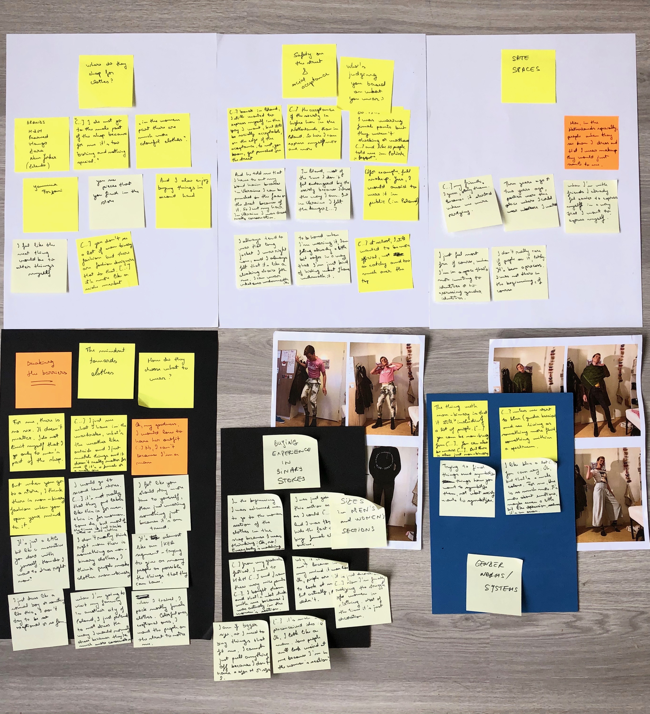
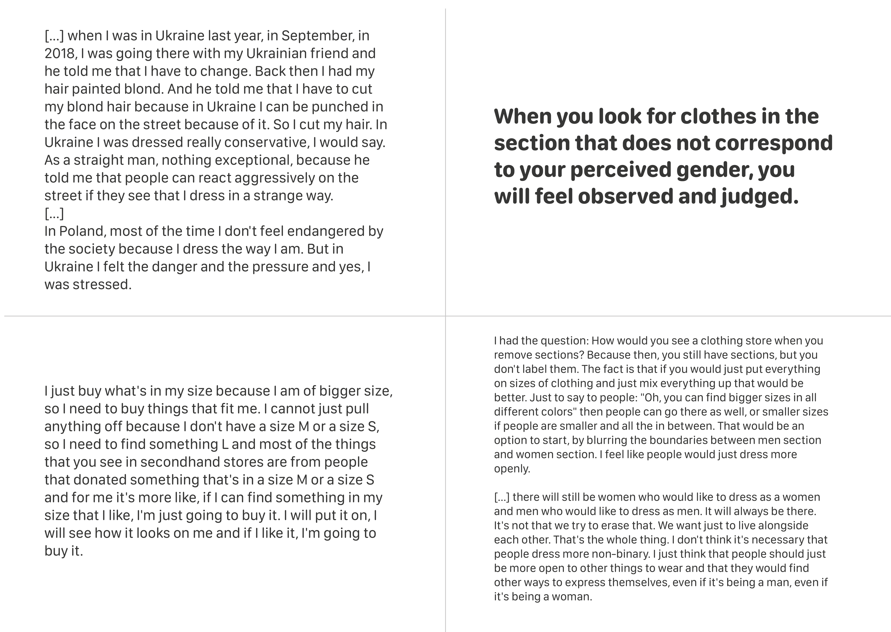
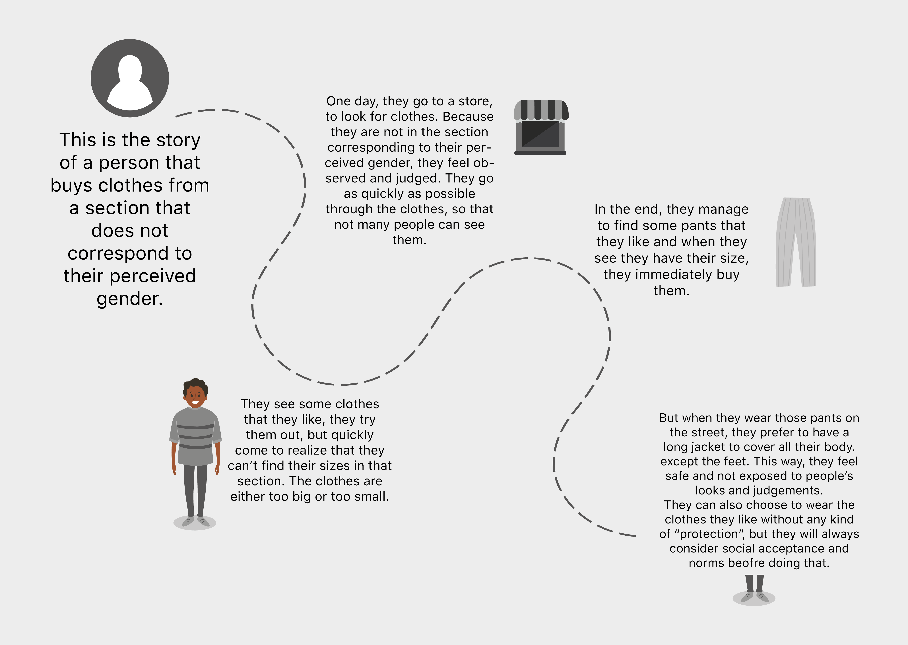

Ethnographic Research
OVERVIEW
This ethnographic research project aimed to empathize with and better understand the community of people choosing to dress non-binary. The term “nonbinary" is relatively new in trans/gender studies, and therefore it comes as no surprise that the current fashion industry is still highly influenced by gender stereotypes and gendered clothing. Even though the internet is full of resources around gender-neutral fashion and how to dress more gender neutral, that is far from being the norm. And not only that, but since it didn't get into the mainstream garment industry, it keeps being a niche and being less accessible to the general public.
THE PROCESS
After interviewing, observing and visiting people from the community, I collected and analysed. The analysis was done by going through the interview transcripts and visuals, selecting the most interesting insights and clustering them, in order to understand the main topics of my findings.

Last, I created some design directions based on an example of non-binary fashion brand that I was able to find online. The brand's name is "Nobody Has To Know" and it started as an experiment that lasted for a couple of years.
Before creating a storyline, I out together the user insights I got and the data corresponding to each user insight. You can see an example of user insight and some quotes in the image below.
THE RESULTS
The result of this ethnographic research was a storyline that presents the journey of a person that buys clothes from a section that does not correspond to their perceived gender. By following the story in the image above, you can imagine how a shopping session would be for a person in this community and try to find design solutions for their problems.